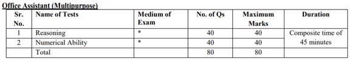

The IBPS RRB Office Assistant (Clerk) Prelims 2020 is scheduled to be held on 12th, 13th, 19th, 20th & 26th Sept 2020. With just 9 days left for the 1st day exam to be conducted, we are positive that you all must be thorough with the entire syllabus by now and must have done at least one round of your revision. To assist you further, today, we bring to you few IBPS RRB Clerk Prelims Last Minute Tips. Let’s quickly take a look at the exam pattern first.

Well, clearly there is a composite time of 45 minutes, so it is you who has to decide how much time you want to spend on Reasoning & how much on Numerical Ability.
The ideal timings that we would suggest will be:
Reasoning: 20 minutes
Numerical Ability: 20 minutes
Going back to left out questions/ half-solved questions: 5 minutes
Going by the level of the paper of RRB Office Assistant, 20 minutes each is a good enough time as questions are generally not lengthy & most of them won't even require much writing. Still, if some of you feel that you want some extra time for Reasoning or Numerical Ability, then you may divide the time as 20 minutes & 25 minutes. But, then be sure that under the exam pressure, you don't just mix up your timings and start hopping between questions.
Calmly handle all the time you have & you'll definitely get through the cut-off.
Keep your State's cut-off in mind before sitting for the exam. It's very important. You can check the previous year cut-offs at the following link:
State-Wise IBPS RRB Office Assistant (Clerk) Cut Off (Previous Years)
Reasoning Section:
Well, this section isn't tough, but may seem a bit lengthy at times, especially if you aren't comfortable with puzzles & arrangement questions. So, utilize these remaining days to practice as many mock tests you can. Also, work on individual topics from logical and analytical reasoning, blood relations, syllogisms, circular seating arrangement, linear seating arrangement, coding-decoding, inequalities, etc. to improve your speed & accuracy.
Numerical Ability:
This section is designed to test your speed & accuracy. Mathematics is always about practice, practice & practice. Just learning some tricks won't help. Applying them constantly in questions is what helps you sub-consciously use them in exam. So, practice questions from percentage, average, ratio-proportion, simple & compound interest, DI and profit and loss as many you can in these last few days.
It is good to hear the strategy of the toppers, bu then always remember what works for one may not work for others. Use this only as a guideline & not as a target. If something is working well for you, you can continue to use the same strategy otherwise device your own keeping your strong & weak areas in mind.
3 Must Do's & Dont's before IBPS RRB Clerk Prelims 2020 Exam:
- Don’t learn anything new now (in the last 7 days)
- Eat & sleep well
- Stay confident
Exam day Checklist for IBPS RRB Clerk Prelims 2020 Exam:
- Call letter with recent passport size photograph affixed thereon (mandatory)
- Photo identity proof (Original + Photocopy) (mandatory)
- One ballpoint pen (mandatory)
- Mask (mandatory)
- Gloves, personal transparent water bottle & personal 50 ml hand sanitizer are among the things you may carry in the exam center if you want to, but they are not mandatory.
- Reach the center well in advance (reach well before time as mentioned in the Official Notification as the checks might take time because of the ongoing Covid situation).
This, compiles almost everything you need to take care of in these last few days before your exam and on your exam day.
For practice you can check out the following links:
Free IBPS RRB Office Assistant Prelims Mock Tests
All The Best !
Latest Blogs

Best Books for SSC CHSL Preparation

SSC CHSL Tier - I Quantitative Aptitude Analysis

SSC CHSL Tier - I Reasoning Section Analysis

SSC CHSL - Important Dates & Exam Pattern